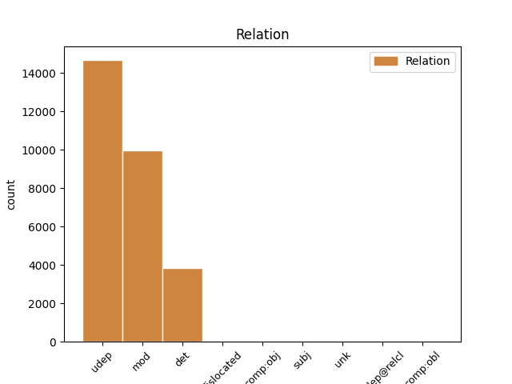

Distribution of features within this leaf

Agreement Rules sorted by frequency.
- When the dependent token is the underspecified dependency(udep) of the head token, and the head token is NOUN and the dependent token is ADP.
1 उन्होंने _ _ _ _ 0 _ _ _
2 यहां _ _ _ _ 0 _ _ _
3 वेटिकन _ _ _ _ 0 _ _ _
4 दूतावास _ _ _ _ 0 _ _ _
5 में _ _ _ _ 0 _ _ _
6 एक _ _ _ _ 0 _ _ _
7 शोक _ _ _ _ 0 _ _ _
8 पुस्तिका _ _ _ _ 0 _ _ _
9 पर _ _ _ _ 0 _ _ _
10 हस्ताक्षर _ _ _ _ 0 _ _ _
11 कर _ _ _ _ 0 _ _ _
12 पोप _ _ _ _ 0 _ _ _
13 जॉन _ _ _ _ 0 _ _ _
14 पॉल _ _ _ _ 0 _ _ _
15 द्वितीय _ _ _ _ 0 _ _ _
16 के का ADP PSP AdpType=Post|Case=Acc|Gender=Masc|Number=Sing 17 udep _ ChunkId=NP6|ChunkType=child|Translit=ke
17 निधन निधन NOUN NN Case=Acc|Gender=Masc|Number=Sing|Person=3 0 _ _ _
18 पर _ _ _ _ 0 _ _ _
19 गहरा _ _ _ _ 0 _ _ _
20 दुख _ _ _ _ 0 _ _ _
21 प्रकट _ _ _ _ 0 _ _ _
22 किया _ _ _ _ 0 _ _ _
23 । _ _ _ _ 0 _ _ _
1 उन्होंने _ _ _ _ 0 _ _ _
2 यहां _ _ _ _ 0 _ _ _
3 वेटिकन _ _ _ _ 0 _ _ _
4 दूतावास _ _ _ _ 0 _ _ _
5 में _ _ _ _ 0 _ _ _
6 एक _ _ _ _ 0 _ _ _
7 शोक _ _ _ _ 0 _ _ _
8 पुस्तिका _ _ _ _ 0 _ _ _
9 पर _ _ _ _ 0 _ _ _
10 हस्ताक्षर _ _ _ _ 0 _ _ _
11 कर _ _ _ _ 0 _ _ _
12 पोप _ _ _ _ 0 _ _ _
13 जॉन _ _ _ _ 0 _ _ _
14 पॉल _ _ _ _ 0 _ _ _
15 द्वितीय _ _ _ _ 0 _ _ _
16 के _ _ _ _ 0 _ _ _
17 निधन _ _ _ _ 0 _ _ _
18 पर _ _ _ _ 0 _ _ _
19 गहरा गहरा ADJ JJ Case=Nom|Gender=Masc|Number=Sing 20 mod _ ChunkId=NP8|ChunkType=child|Translit=gaharā
20 दुख दुख NOUN NN Case=Nom|Gender=Masc|Number=Sing|Person=3 0 _ _ _
21 प्रकट _ _ _ _ 0 _ _ _
22 किया _ _ _ _ 0 _ _ _
23 । _ _ _ _ 0 _ _ _
1 इन यह DET DEM Case=Acc|Number=Plur|Person=3|PronType=Dem 3 det _ ChunkId=NP|ChunkType=child|Translit=ina
2 दोनों _ _ _ _ 0 _ _ _
3 देशों देश NOUN NN Case=Acc|Gender=Masc|Number=Plur|Person=3 0 _ _ _
4 के _ _ _ _ 0 _ _ _
5 बीच _ _ _ _ 0 _ _ _
6 रिश्ते _ _ _ _ 0 _ _ _
7 में _ _ _ _ 0 _ _ _
8 सुधार _ _ _ _ 0 _ _ _
9 से _ _ _ _ 0 _ _ _
10 करोड़ों _ _ _ _ 0 _ _ _
11 लोगों _ _ _ _ 0 _ _ _
12 का _ _ _ _ 0 _ _ _
13 भला _ _ _ _ 0 _ _ _
14 होगा _ _ _ _ 0 _ _ _
15 । _ _ _ _ 0 _ _ _
1 उनका _ _ _ _ 0 _ _ _
2 कहना _ _ _ _ 0 _ _ _
3 है _ _ _ _ 0 _ _ _
4 कि _ _ _ _ 0 _ _ _
5 छोटे _ _ _ _ 0 _ _ _
6 शहरों _ _ _ _ 0 _ _ _
7 व _ _ _ _ 0 _ _ _
8 गाँवों _ _ _ _ 0 _ _ _
9 में _ _ _ _ 0 _ _ _
10 रहने _ _ _ _ 0 _ _ _
11 वाले वाला ADP PSP AdpType=Post|Case=Acc|Gender=Masc|Number=Plur 12 mod _ ChunkId=VGNN2|ChunkType=child|Translit=vāle
12 लोगों लोग NOUN NN Case=Acc|Gender=Masc|Number=Plur|Person=3 0 _ _ _
13 को _ _ _ _ 0 _ _ _
14 ट्रेन _ _ _ _ 0 _ _ _
15 के _ _ _ _ 0 _ _ _
16 जरिये _ _ _ _ 0 _ _ _
17 पर्यटन _ _ _ _ 0 _ _ _
18 की _ _ _ _ 0 _ _ _
19 कोई _ _ _ _ 0 _ _ _
20 सुविधा _ _ _ _ 0 _ _ _
21 नहीं _ _ _ _ 0 _ _ _
22 मिलती _ _ _ _ 0 _ _ _
23 । _ _ _ _ 0 _ _ _
1 दोनों दो NUM QC Case=Acc|Number=Plur|NumType=Card 2 mod _ ChunkId=NP|ChunkType=child|Translit=donoṁ
2 नेताओं नेता NOUN NN Case=Acc|Gender=Masc|Number=Plur|Person=3 0 _ _ _
3 ने _ _ _ _ 0 _ _ _
4 द्विपक्षीय _ _ _ _ 0 _ _ _
5 , _ _ _ _ 0 _ _ _
6 क्षेत्रीय _ _ _ _ 0 _ _ _
7 और _ _ _ _ 0 _ _ _
8 अंतर्राष्ट्रीय _ _ _ _ 0 _ _ _
9 मुद्दों _ _ _ _ 0 _ _ _
10 पर _ _ _ _ 0 _ _ _
11 विचार _ _ _ _ 0 _ _ _
12 - _ _ _ _ 0 _ _ _
13 विमर्श _ _ _ _ 0 _ _ _
14 किया _ _ _ _ 0 _ _ _
15 । _ _ _ _ 0 _ _ _
1 इस _ _ _ _ 0 _ _ _
2 बीच _ _ _ _ 0 _ _ _
3 बारिश _ _ _ _ 0 _ _ _
4 नहीं _ _ _ _ 0 _ _ _
5 होने _ _ _ _ 0 _ _ _
6 के _ _ _ _ 0 _ _ _
7 कारण _ _ _ _ 0 _ _ _
8 गर्मी _ _ _ _ 0 _ _ _
9 ने _ _ _ _ 0 _ _ _
10 फिर _ _ _ _ 0 _ _ _
11 अपना _ _ _ _ 0 _ _ _
12 कहर _ _ _ _ 0 _ _ _
13 बरपाना बरपा VERB VM Case=Nom|VerbForm=Inf 14 mod _ ChunkId=VGNN2|ChunkType=head|Tam=nA|Translit=barapānā|Vib=ना
14 शुरू शुरू NOUN NN Case=Nom|Gender=Masc|Number=Sing|Person=3 0 _ _ _
15 कर _ _ _ _ 0 _ _ _
16 दिया _ _ _ _ 0 _ _ _
17 तथा _ _ _ _ 0 _ _ _
18 कई _ _ _ _ 0 _ _ _
19 स्थानों _ _ _ _ 0 _ _ _
20 पर _ _ _ _ 0 _ _ _
21 तापमान _ _ _ _ 0 _ _ _
22 ४० _ _ _ _ 0 _ _ _
23 डिग्री _ _ _ _ 0 _ _ _
24 सेल्सियस _ _ _ _ 0 _ _ _
25 से _ _ _ _ 0 _ _ _
26 ऊपर _ _ _ _ 0 _ _ _
27 पहुंच _ _ _ _ 0 _ _ _
28 गया _ _ _ _ 0 _ _ _
29 है _ _ _ _ 0 _ _ _
30 । _ _ _ _ 0 _ _ _
1 दूसरी _ _ _ _ 0 _ _ _
2 ओर ओर ADV NST AdpType=Post|Case=Nom|Gender=Fem|Number=Sing|Person=3 8 mod _ AltTag=ADV-NOUN|ChunkId=NP|ChunkType=head|Translit=ora
3 खुफिया _ _ _ _ 0 _ _ _
4 सूत्रों _ _ _ _ 0 _ _ _
5 का _ _ _ _ 0 _ _ _
6 यह _ _ _ _ 0 _ _ _
7 भी _ _ _ _ 0 _ _ _
8 दावा दावा NOUN NN Case=Nom|Gender=Masc|Number=Sing|Person=3 0 _ _ _
9 है _ _ _ _ 0 _ _ _
10 कि _ _ _ _ 0 _ _ _
11 बम _ _ _ _ 0 _ _ _
12 ब्लास्ट _ _ _ _ 0 _ _ _
13 की _ _ _ _ 0 _ _ _
14 साजिश _ _ _ _ 0 _ _ _
15 के _ _ _ _ 0 _ _ _
16 पीछे _ _ _ _ 0 _ _ _
17 पूरी _ _ _ _ 0 _ _ _
18 तरह _ _ _ _ 0 _ _ _
19 आईएसआई _ _ _ _ 0 _ _ _
20 का _ _ _ _ 0 _ _ _
21 दिमाग _ _ _ _ 0 _ _ _
22 है _ _ _ _ 0 _ _ _
23 । _ _ _ _ 0 _ _ _
1 संसदीय _ _ _ _ 0 _ _ _
2 समिति _ _ _ _ 0 _ _ _
3 द्वारा _ _ _ _ 0 _ _ _
4 हलके _ _ _ _ 0 _ _ _
5 लड़ाकू _ _ _ _ 0 _ _ _
6 विमान विमान NOUN NN Case=Acc|Gender=Masc|Number=Sing|Person=3 0 _ _ _
7 ( _ _ _ _ 0 _ _ _
8 एलसीए _ _ _ _ 0 _ _ _
9 ) _ _ _ _ 0 _ _ _
10 जैसी जैसा ADP PSP AdpType=Post|Case=Acc|Gender=Fem|Number=Plur 6 dislocated _ ChunkId=FRAGP|ChunkType=head|Translit=jaisī
11 महत्वपूर्ण _ _ _ _ 0 _ _ _
12 परियोजनाओं _ _ _ _ 0 _ _ _
13 की _ _ _ _ 0 _ _ _
14 खामियों _ _ _ _ 0 _ _ _
15 का _ _ _ _ 0 _ _ _
16 पता _ _ _ _ 0 _ _ _
17 लगाने _ _ _ _ 0 _ _ _
18 के _ _ _ _ 0 _ _ _
19 लिए _ _ _ _ 0 _ _ _
20 डीआरडीओ _ _ _ _ 0 _ _ _
21 के _ _ _ _ 0 _ _ _
22 प्रदर्शन _ _ _ _ 0 _ _ _
23 के _ _ _ _ 0 _ _ _
24 परीक्षण _ _ _ _ 0 _ _ _
25 पर _ _ _ _ 0 _ _ _
26 जोर _ _ _ _ 0 _ _ _
27 दिए _ _ _ _ 0 _ _ _
28 जाने _ _ _ _ 0 _ _ _
29 के _ _ _ _ 0 _ _ _
30 मद्देनजर _ _ _ _ 0 _ _ _
31 रक्षा _ _ _ _ 0 _ _ _
32 मंत्री _ _ _ _ 0 _ _ _
33 प्रणव _ _ _ _ 0 _ _ _
34 मुखर्जी _ _ _ _ 0 _ _ _
35 ने _ _ _ _ 0 _ _ _
36 मंगलवार _ _ _ _ 0 _ _ _
37 को _ _ _ _ 0 _ _ _
38 कहा _ _ _ _ 0 _ _ _
39 कि _ _ _ _ 0 _ _ _
40 जरूरतों _ _ _ _ 0 _ _ _
41 के _ _ _ _ 0 _ _ _
42 आधार _ _ _ _ 0 _ _ _
43 पर _ _ _ _ 0 _ _ _
44 एलसीए _ _ _ _ 0 _ _ _
45 तेजस _ _ _ _ 0 _ _ _
46 को _ _ _ _ 0 _ _ _
47 बेड़े _ _ _ _ 0 _ _ _
48 में _ _ _ _ 0 _ _ _
49 शामिल _ _ _ _ 0 _ _ _
50 करने _ _ _ _ 0 _ _ _
51 के _ _ _ _ 0 _ _ _
52 सभी _ _ _ _ 0 _ _ _
53 प्रयास _ _ _ _ 0 _ _ _
54 किए _ _ _ _ 0 _ _ _
55 जा _ _ _ _ 0 _ _ _
56 रहे _ _ _ _ 0 _ _ _
57 हैं _ _ _ _ 0 _ _ _
58 । _ _ _ _ 0 _ _ _
1 बर्फबारी _ _ _ _ 0 _ _ _
2 से _ _ _ _ 0 _ _ _
3 सीमा _ _ _ _ 0 _ _ _
4 पर _ _ _ _ 0 _ _ _
5 लगी _ _ _ _ 0 _ _ _
6 बाड़ _ _ _ _ 0 _ _ _
7 ढक _ _ _ _ 0 _ _ _
8 गई _ _ _ _ 0 _ _ _
9 थी _ _ _ _ 0 _ _ _
10 इस _ _ _ _ 0 _ _ _
11 वजह _ _ _ _ 0 _ _ _
12 से _ _ _ _ 0 _ _ _
13 इसमें _ _ _ _ 0 _ _ _
14 प्रवाहित _ _ _ _ 0 _ _ _
15 किया _ _ _ _ 0 _ _ _
16 जाने _ _ _ _ 0 _ _ _
17 वाला वाला AUX VAUX Case=Nom|Gender=Masc|Number=Sing 18 mod _ ChunkId=VGNN|ChunkType=child|Translit=vālā
18 करंट करंट NOUN NN Case=Nom|Gender=Masc|Number=Sing|Person=3 0 _ _ _
19 रोक _ _ _ _ 0 _ _ _
20 दिया _ _ _ _ 0 _ _ _
21 गया _ _ _ _ 0 _ _ _
22 था _ _ _ _ 0 _ _ _
23 । _ _ _ _ 0 _ _ _
1 पार्टी _ _ _ _ 0 _ _ _
2 के का ADP PSP AdpType=Post|Case=Nom|Gender=Masc|Number=Sing|Person=3|Polite=Form 4 subj _ ChunkId=NP|ChunkType=child|Translit=ke
3 पूर्व _ _ _ _ 0 _ _ _
4 कोषाध्यक्ष कोषाध्यक्ष NOUN NN Case=Nom|Gender=Masc|Number=Sing|Person=3 0 _ _ _
5 सुकुमार _ _ _ _ 0 _ _ _
6 नांबियार _ _ _ _ 0 _ _ _
7 भी _ _ _ _ 0 _ _ _
8 कार्यकारिणी _ _ _ _ 0 _ _ _
9 में _ _ _ _ 0 _ _ _
10 मौजूद _ _ _ _ 0 _ _ _
11 हैं _ _ _ _ 0 _ _ _
12 । _ _ _ _ 0 _ _ _
1 छात्रों _ _ _ _ 0 _ _ _
2 ने _ _ _ _ 0 _ _ _
3 धर्मेंद्र _ _ _ _ 0 _ _ _
4 ही _ _ _ _ 0 _ _ _
5 नहीं _ _ _ _ 0 _ _ _
6 बल्कि _ _ _ _ 0 _ _ _
7 उनके _ _ _ _ 0 _ _ _
8 बेटों बेटा NOUN NN Case=Acc|Gender=Masc|Number=Plur|Person=3 0 _ _ _
9 की का ADP PSP AdpType=Post|Case=Acc|Gender=Fem|Number=Plur 8 comp:obj _ ChunkId=NP4|ChunkType=child|Translit=kī
10 भी _ _ _ _ 0 _ _ _
11 फिल्मों _ _ _ _ 0 _ _ _
12 के _ _ _ _ 0 _ _ _
13 प्रदर्शन _ _ _ _ 0 _ _ _
14 को _ _ _ _ 0 _ _ _
15 रोकने _ _ _ _ 0 _ _ _
16 की _ _ _ _ 0 _ _ _
17 कसम _ _ _ _ 0 _ _ _
18 खाई _ _ _ _ 0 _ _ _
19 है _ _ _ _ 0 _ _ _
20 । _ _ _ _ 0 _ _ _
1 इसीलिए _ _ _ _ 0 _ _ _
2 सभी _ _ _ _ 0 _ _ _
3 मुद्दों _ _ _ _ 0 _ _ _
4 को _ _ _ _ 0 _ _ _
5 रफा _ _ _ _ 0 _ _ _
6 - _ _ _ _ 0 _ _ _
7 दफा _ _ _ _ 0 _ _ _
8 करने _ _ _ _ 0 _ _ _
9 के _ _ _ _ 0 _ _ _
10 लिए _ _ _ _ 0 _ _ _
11 नक़वी _ _ _ _ 0 _ _ _
12 आडवाणी _ _ _ _ 0 _ _ _
13 से _ _ _ _ 0 _ _ _
14 आमने आमने NOUN NSTC AdpType=Post|Case=Nom|Gender=Masc|Number=Sing|Person=3 0 _ _ _
15 - _ _ _ _ 0 _ _ _
16 सामने सामने ADV NST AdpType=Post|Case=Nom|Gender=Masc|Number=Sing|Person=3 14 comp:obj _ AltTag=ADV-NOUN|ChunkId=NP6|ChunkType=head|Translit=sāmane
17 मिलना _ _ _ _ 0 _ _ _
18 चाहते _ _ _ _ 0 _ _ _
19 थे _ _ _ _ 0 _ _ _
20 । _ _ _ _ 0 _ _ _
1 कैबिनेट _ _ _ _ 0 _ _ _
2 की _ _ _ _ 0 _ _ _
3 बैठक _ _ _ _ 0 _ _ _
4 के _ _ _ _ 0 _ _ _
5 बाद _ _ _ _ 0 _ _ _
6 सूचना _ _ _ _ 0 _ _ _
7 और _ _ _ _ 0 _ _ _
8 प्रसारण _ _ _ _ 0 _ _ _
9 मंत्री _ _ _ _ 0 _ _ _
10 एस _ _ _ _ 0 _ _ _
11 जयपाल _ _ _ _ 0 _ _ _
12 रेड्डी _ _ _ _ 0 _ _ _
13 ने _ _ _ _ 0 _ _ _
14 बताया _ _ _ _ 0 _ _ _
15 कि _ _ _ _ 0 _ _ _
16 इसमें _ _ _ _ 0 _ _ _
17 उपभोक्ताओं _ _ _ _ 0 _ _ _
18 के _ _ _ _ 0 _ _ _
19 हितों _ _ _ _ 0 _ _ _
20 के _ _ _ _ 0 _ _ _
21 संरक्षण _ _ _ _ 0 _ _ _
22 के _ _ _ _ 0 _ _ _
23 लिए _ _ _ _ 0 _ _ _
24 पेट्रोलियम _ _ _ _ 0 _ _ _
25 और _ _ _ _ 0 _ _ _
26 प्राकृतिक _ _ _ _ 0 _ _ _
27 गैस गैस NOUN NN Case=Acc|Gender=Fem|Number=Sing|Person=3 0 _ _ _
28 जैसे जैसा PART RP Case=Acc|Gender=Masc 27 unk _ ChunkId=NP9|ChunkType=child|Translit=jaise
29 पेट्रोलियम _ _ _ _ 0 _ _ _
30 उत्पादों _ _ _ _ 0 _ _ _
31 के _ _ _ _ 0 _ _ _
32 लिए _ _ _ _ 0 _ _ _
33 नियामक _ _ _ _ 0 _ _ _
34 बोर्ड _ _ _ _ 0 _ _ _
35 बनाने _ _ _ _ 0 _ _ _
36 का _ _ _ _ 0 _ _ _
37 प्रस्ताव _ _ _ _ 0 _ _ _
38 दिया _ _ _ _ 0 _ _ _
39 गया _ _ _ _ 0 _ _ _
40 है _ _ _ _ 0 _ _ _
41 । _ _ _ _ 0 _ _ _
1 सम्मेलन _ _ _ _ 0 _ _ _
2 में _ _ _ _ 0 _ _ _
3 जम्मू _ _ _ _ 0 _ _ _
4 - _ _ _ _ 0 _ _ _
5 कश्मीर _ _ _ _ 0 _ _ _
6 के _ _ _ _ 0 _ _ _
7 अलावा _ _ _ _ 0 _ _ _
8 लद्दाख _ _ _ _ 0 _ _ _
9 व _ _ _ _ 0 _ _ _
10 कारगिल _ _ _ _ 0 _ _ _
11 से _ _ _ _ 0 _ _ _
12 ताल्लुक _ _ _ _ 0 _ _ _
13 रखने _ _ _ _ 0 _ _ _
14 वाले वाला ADP PSP AdpType=Post|Case=Acc|Gender=Masc|Number=Plur 16 udep@relcl _ ChunkId=VGNN|ChunkType=child|Translit=vāle
15 सियासी _ _ _ _ 0 _ _ _
16 नेताओं नेता NOUN NN Case=Acc|Gender=Masc|Number=Plur|Person=3 0 _ _ _
17 ने _ _ _ _ 0 _ _ _
18 भी _ _ _ _ 0 _ _ _
19 हिस्सा _ _ _ _ 0 _ _ _
20 लिया _ _ _ _ 0 _ _ _
21 । _ _ _ _ 0 _ _ _
1 उन्होंने _ _ _ _ 0 _ _ _
2 कहा _ _ _ _ 0 _ _ _
3 कि _ _ _ _ 0 _ _ _
4 प्रशासन _ _ _ _ 0 _ _ _
5 के _ _ _ _ 0 _ _ _
6 पास पास ADP NST AdpType=Post|Case=Nom|Gender=Masc|Number=Sing|Person=3 11 comp:obl _ AltTag=ADP-NOUN|ChunkId=NP2|ChunkType=child|Translit=pāsa
7 34 _ _ _ _ 0 _ _ _
8 दंगा _ _ _ _ 0 _ _ _
9 पीड़ितों _ _ _ _ 0 _ _ _
10 की _ _ _ _ 0 _ _ _
11 सूची सूची NOUN NN Case=Nom|Gender=Fem|Number=Sing|Person=3 0 _ _ _
12 है _ _ _ _ 0 _ _ _
13 जिसमें _ _ _ _ 0 _ _ _
14 से _ _ _ _ 0 _ _ _
15 28 _ _ _ _ 0 _ _ _
16 को _ _ _ _ 0 _ _ _
17 यहां _ _ _ _ 0 _ _ _
18 दफनाया _ _ _ _ 0 _ _ _
19 गया _ _ _ _ 0 _ _ _
20 था _ _ _ _ 0 _ _ _
21 । _ _ _ _ 0 _ _ _
Disagree Examples:
1 कहा _ _ _ _ 0 _ _ _
2 जाता _ _ _ _ 0 _ _ _
3 है _ _ _ _ 0 _ _ _
4 कि _ _ _ _ 0 _ _ _
5 रानी _ _ _ _ 0 _ _ _
6 के का ADP PSP AdpType=Post|Case=Acc|Gender=Masc|Number=Sing 7 udep _ ChunkId=NP|ChunkType=child|Translit=ke
7 प्रतिदिन प्रतिदिन NOUN NN Case=Nom|Gender=Masc|Number=Sing|Person=3 0 _ _ _
8 नर्मदा _ _ _ _ 0 _ _ _
9 दर्शन _ _ _ _ 0 _ _ _
10 के _ _ _ _ 0 _ _ _
11 पश्चात _ _ _ _ 0 _ _ _
12 अन्न _ _ _ _ 0 _ _ _
13 - _ _ _ _ 0 _ _ _
14 जल _ _ _ _ 0 _ _ _
15 ग्रहण _ _ _ _ 0 _ _ _
16 करने _ _ _ _ 0 _ _ _
17 की _ _ _ _ 0 _ _ _
18 आदत _ _ _ _ 0 _ _ _
19 के _ _ _ _ 0 _ _ _
20 कारण _ _ _ _ 0 _ _ _
21 बाज _ _ _ _ 0 _ _ _
22 बहादुर _ _ _ _ 0 _ _ _
23 ने _ _ _ _ 0 _ _ _
24 यह _ _ _ _ 0 _ _ _
25 ऊँचा _ _ _ _ 0 _ _ _
26 महल _ _ _ _ 0 _ _ _
27 बनवाया _ _ _ _ 0 _ _ _
28 था _ _ _ _ 0 _ _ _
29 । _ _ _ _ 0 _ _ _
1 रतलाम _ _ _ _ 0 _ _ _
2 रेल _ _ _ _ 0 _ _ _
3 मुख्यालय _ _ _ _ 0 _ _ _
4 ( _ _ _ _ 0 _ _ _
5 124 _ _ _ _ 0 _ _ _
6 किमी. _ _ _ _ 0 _ _ _
7 ) _ _ _ _ 0 _ _ _
8 मुंबई _ _ _ _ 0 _ _ _
9 - _ _ _ _ 0 _ _ _
10 दिल्ली _ _ _ _ 0 _ _ _
11 मुख्य _ _ _ _ 0 _ _ _
12 लाइन _ _ _ _ 0 _ _ _
13 पर _ _ _ _ 0 _ _ _
14 है _ _ _ _ 0 _ _ _
15 और _ _ _ _ 0 _ _ _
16 इंदौर _ _ _ _ 0 _ _ _
17 99 _ _ _ _ 0 _ _ _
18 किमी. _ _ _ _ 0 _ _ _
19 की का ADP PSP AdpType=Post|Case=Nom|Gender=Fem|Number=Sing 20 udep _ ChunkId=NP5|ChunkType=child|Translit=kī
20 दूरी दूरी NOUN NN Case=Acc|Gender=Fem|Number=Sing|Person=3 0 _ _ _
21 पर _ _ _ _ 0 _ _ _
22 है _ _ _ _ 0 _ _ _
23 । _ _ _ _ 0 _ _ _
1 इस यह DET DEM Case=Acc|Number=Sing|Person=3|PronType=Dem 2 det _ ChunkId=NP|ChunkType=child|Translit=isa
2 समय समय NOUN NN Case=Nom|Gender=Masc|Number=Sing|Person=3 0 _ _ _
3 यहाँ _ _ _ _ 0 _ _ _
4 पर्यटकों _ _ _ _ 0 _ _ _
5 का _ _ _ _ 0 _ _ _
6 मेला _ _ _ _ 0 _ _ _
7 लगा _ _ _ _ 0 _ _ _
8 रहता _ _ _ _ 0 _ _ _
9 है _ _ _ _ 0 _ _ _
10 । _ _ _ _ 0 _ _ _
1 यहाँ _ _ _ _ 0 _ _ _
2 बाघ _ _ _ _ 0 _ _ _
3 के _ _ _ _ 0 _ _ _
4 अलावा _ _ _ _ 0 _ _ _
5 तेंदुआ _ _ _ _ 0 _ _ _
6 , _ _ _ _ 0 _ _ _
7 हिरण _ _ _ _ 0 _ _ _
8 , _ _ _ _ 0 _ _ _
9 चीतल _ _ _ _ 0 _ _ _
10 , _ _ _ _ 0 _ _ _
11 नीलगाय _ _ _ _ 0 _ _ _
12 , _ _ _ _ 0 _ _ _
13 जंगली _ _ _ _ 0 _ _ _
14 सूअर _ _ _ _ 0 _ _ _
15 और _ _ _ _ 0 _ _ _
16 कई _ _ _ _ 0 _ _ _
17 तरह _ _ _ _ 0 _ _ _
18 के का ADP PSP AdpType=Post|Case=Acc|Gender=Masc|Number=Plur 19 udep _ ChunkId=NP8|ChunkType=child|Translit=ke
19 पक्षी पक्षी NOUN NN Case=Nom|Gender=Masc|Number=Plur|Person=3 0 _ _ _
20 बड़ी _ _ _ _ 0 _ _ _
21 संख्या _ _ _ _ 0 _ _ _
22 में _ _ _ _ 0 _ _ _
23 हैं _ _ _ _ 0 _ _ _
24 । _ _ _ _ 0 _ _ _
1 मुगल _ _ _ _ 0 _ _ _
2 शासक _ _ _ _ 0 _ _ _
3 शाह _ _ _ _ 0 _ _ _
4 आलम _ _ _ _ 0 _ _ _
5 ने _ _ _ _ 0 _ _ _
6 1754 _ _ _ _ 0 _ _ _
7 में _ _ _ _ 0 _ _ _
8 जयपुर _ _ _ _ 0 _ _ _
9 के का ADP PSP AdpType=Post|Case=Acc|Gender=Masc|Number=Sing 10 udep _ ChunkId=NP3|ChunkType=child|Translit=ke
10 महाराजा महाराजा NOUN NN Case=Nom|Gender=Masc|Number=Sing|Person=3 0 _ _ _
11 सवाई _ _ _ _ 0 _ _ _
12 माधोसिंह _ _ _ _ 0 _ _ _
13 प्रथम _ _ _ _ 0 _ _ _
14 को _ _ _ _ 0 _ _ _
15 यह _ _ _ _ 0 _ _ _
16 किला _ _ _ _ 0 _ _ _
17 पुरस्कार _ _ _ _ 0 _ _ _
18 स्वरूप _ _ _ _ 0 _ _ _
19 दिया _ _ _ _ 0 _ _ _
20 । _ _ _ _ 0 _ _ _